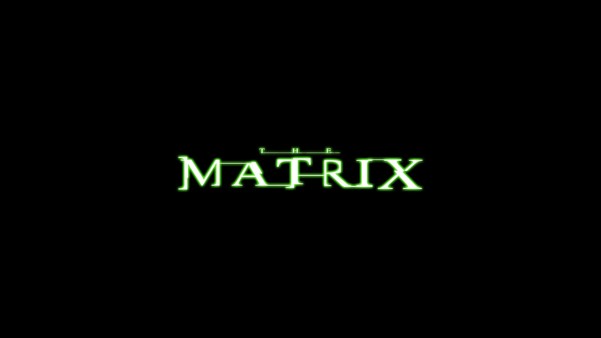

The Matrix - Chapter 1

I deeply believe the movie 'The Matrix' (1999) was really trying to tell something so deep about the reality of our existence. For many, this became beyond just a fantasy movie and opened mysterious viewpoints about the world we are living in. It questioned humanity and what is actually real in a world where everything feels 'fake.'
When it comes to the word 'Matrix,' that's not just a title. It has many meanings beyond the matrix we studied in mathematics.
The Matrix is a world that has been pulled over your eyes to blind you from the truth. - Morpheus
The Matrix is a made-up world to hide some disturbing realities from the view of humans, and the purpose was to make them comfortable and feel at home. We never questioned; we never refused. Instead, we tried to go along with their strategies; we consumed it without any worry at all. But why? Why didn't anybody show the dare to pop the bubble and face the reality?
Unveiling the Truth
We don't have to sit for hours and decode the movie scenes one by one to get an idea about what it's trying to say. Everything is explicitly spoken by the characters.
You are a slave, Neo (yeah! It's you, dear.) Like everyone else, we were born into bondage. Born into a prison that you cannot smell/taste/touch. It's a prison for your mind.
Never saw a movie beyond Matrix that says the disturbing realities of our world and is still viewed and accepted by millions. Many people just created much content related to simulation theory and the probability of our living in a real world.
The Red Pill
How do you know that you are still in deep sleep, or is it time to wake up to reality?
You are here because you know something. What you know you can't explain. But you feel it. You've felt it your entire life.
You know, something is really bad, something feels wrong, but you can't explain it in detail. Every day you try so hard to fit in, but it always ends up in failure, and you mark yourself as the wrong person. Like, "Something's wrong with me." But there is nothing actually wrong with you. You were the only truth that remained.
Is this normal? Hard to say! When we are looking in a moral way, no, it's not. But when we look at the same way society runs currently, then yes, that's normal. Anyway, the deeper truth is that, because you are a truth seeker, many of those blue-pill individuals can't keep up with you. So they resist, resist in disturbing ways. Nothing, and never anything, was wrong on your side at all. Actually, it is a sign; it is an alarm to wake you up. Don't ignore it, dear. Accept it even if it's bitter.
One truth is that there is no one like Morpheus going to come and save us. You know why? Not because everything is our illusion, but Morpheus is not an individual; he is your inner self. Your inner self is what's going to save you.
How to Break the Liquid-Filled Pod?
Knowledge is the ultimate power we have. Study, learn, and understand the situations by yourself. Stop consuming too much content, like videos, reels, shorts, porn, etc., from 100 sources just to make them rich. You don't have to do it 24*7. Instead, fight for your rights, say it loud, and never allow anybody to take away your moral rights. This is what a real-life Neo is going to do.
Actually, in a sense, like Neo, we are too trapped inside a liquid-filled reproductive pod. We have a fixed cycle like born->grow up->get a degree->do a random job (absolutely not related to our studies)->marriage->family->have a child/grandchild->die. But is this the real purpose or a made-up purpose?
We are distracted, weakened by getting forced to use what we actually don't need by someone. Social media, marketing, AI, corrupted education, corrupted leaders, etc. have hardly tried to make us unconscious about the reality we are facing, and they are punishing those who have the willingness to question them. We are daily fed shit just to stay silent.
Education makes us clever. Education gives us the power to ask and question. It creates awareness and helps us to understand our moral rights as humans. Many people believe that holding a degree/PG with the highest possible mark is the ultimate education. They are just trading convenience and wealth over reality. How can someone normal actually build it up perfectly in a disturbing world? Humans born with humanity absolutely will fail at some time. These individuals read 100 books just to memorize them and write in a white paper. Never think, "Is this valuable?" Are you going to help me at all? Nothing, just obey what they said. My college life was the most cursed period in my life. If the stupid education system calls a student dumb, then everyone follows and participates in the program to destroy his life. In school/college we don't only experience this but also meet some future criminals and bullies. What to say? Who cares, right?
These all are bubbles that are going to pop when you wake up in reality. Practically, "everything we see and hear is a lie." It's a well-planned business strategy. "We are their product, and at the same time we are their slaves too.
(Will be continued)